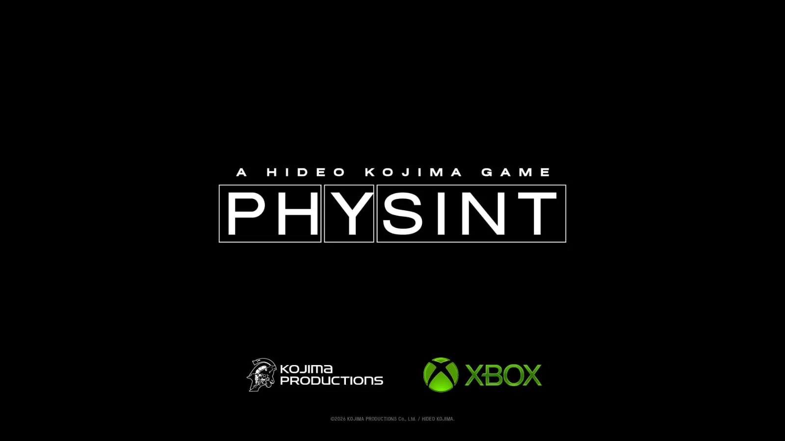
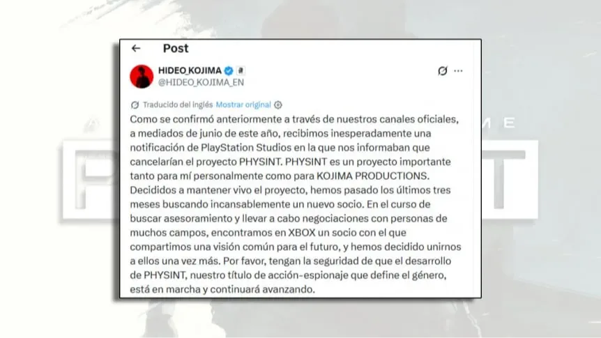

Luiso · 10 de septiembre de 2026 · 3 min de lectura
El proyecto que muchos consideraban el regreso espiritual de Metal Gear Solid acaba de dar un giro inesperado. PHYSINT, anunciado originalmente junto a Sony en 2024, ya no será publicado por PlayStation: Kojima Productions confirmó que continuará trabajando en el juego junto a Xbox.
El cambio fue anunciado por Xbox, que presentó el acuerdo como una ampliación de la relación que ya mantiene con el estudio japonés a través de OD. La nueva asociación contempla la publicación de PHYSINT y también abre la puerta a colaboraciones entre ambas compañías en proyectos de cine y televisión.
La parte más llamativa de la noticia llegó a través de Hideo Kojima. El creador explicó que a mediados de junio recibió una notificación de Sony Interactive Entertainment en la que se le comunicaba que el proyecto debía ser cancelado.
Según su explicación, Kojima Productions no abandonó el juego. El estudio pasó aproximadamente tres meses buscando un nuevo socio editorial capaz de compartir la visión que tenían para el proyecto.

Finalmente, esa búsqueda terminó en Xbox.
Sony, por su parte, confirmó que tomó la decisión de apartarse después de una evaluación del proyecto. La compañía no explicó públicamente los motivos concretos detrás de la decisión, aunque remarcó que continúa admirando la visión de Kojima y que la relación entre ambas partes sigue siendo buena.
No. Aunque Kojima describió la decisión de Sony como una cancelación del proyecto desde su lado, el juego continúa en desarrollo bajo Kojima Productions.
Lo que cambió fue su socio editorial.
PHYSINT había sido presentado como un título de acción y espionaje de nueva generación, desarrollado con la intención de llevar el género en una nueva dirección.
Ahora, ese proyecto seguirá adelante con Xbox como nuevo socio.
La explicación de Kojima es principalmente creativa. El desarrollador aseguró que encontró en Xbox una compañía que comparte la visión que Kojima Productions tiene para el futuro del proyecto.
La asociación tampoco parte de cero. Kojima Productions y Xbox ya trabajan conjuntamente en OD, un proyecto del que todavía se conocen pocos detalles.
La nueva alianza, por lo tanto, amplía una relación que ya estaba en marcha en lugar de crear una colaboración completamente nueva.
Desde Xbox, la compañía destacó precisamente la libertad creativa de los desarrolladores y presentó la incorporación de PHYSINT como una oportunidad para respaldar una propuesta que busca desafiar las convenciones del género.
Es un cambio especialmente significativo porque Kojima Productions y Sony tenían una relación muy estrecha.
Death Stranding fue publicado originalmente por Sony Interactive Entertainment y posteriormente llegó a PC. Su continuación, Death Stranding 2: On the Beach, también fue desarrollada en colaboración con Sony.
Por eso, que PHYSINT abandone ese ecosistema y pase a estar vinculado a Xbox supone un cambio importante en la relación comercial entre Kojima y PlayStation.
Sin embargo, por ahora no hay indicios de una ruptura total entre las compañías. De hecho, Sony sostiene que la relación continúa siendo positiva.
Por ahora, no está confirmado.
El anuncio oficial habla de una asociación para la publicación de PHYSINT, pero no detalla todas las plataformas en las que estará disponible.
Por lo tanto, cualquier afirmación sobre una exclusividad para Xbox Series X|S, PC u otras plataformas debe tomarse actualmente como especulación.
Tampoco hay una fecha oficial.
El proyecto fue anunciado en 2024 cuando todavía se encontraba en una etapa temprana de desarrollo y el nuevo cambio de socio demuestra que todavía queda un camino considerable por delante.
Por ahora, Kojima Productions simplemente confirmó que el desarrollo continúa y que habrá más información a medida que avance el proyecto.